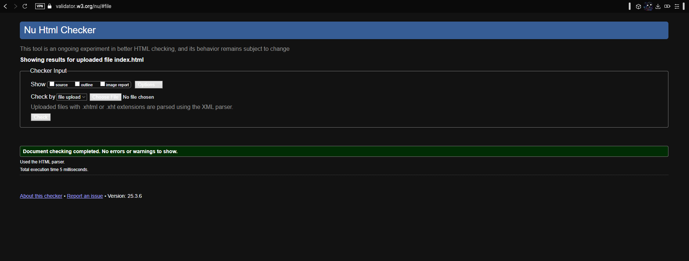
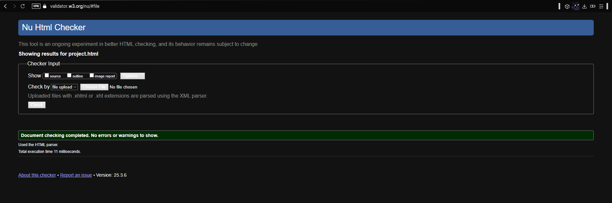
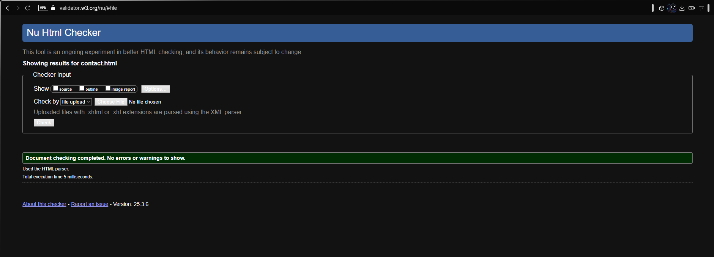
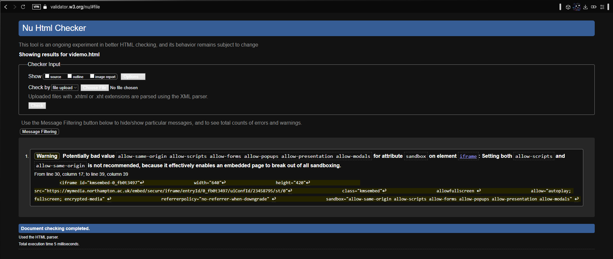
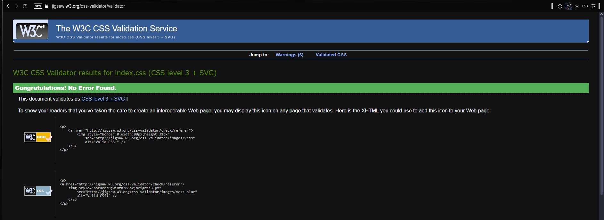
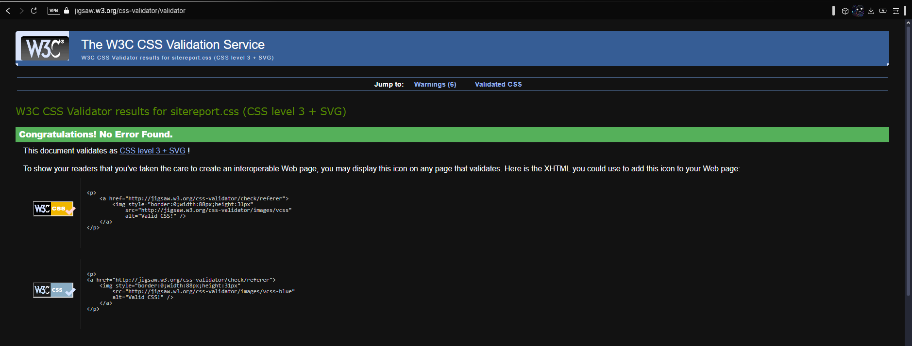
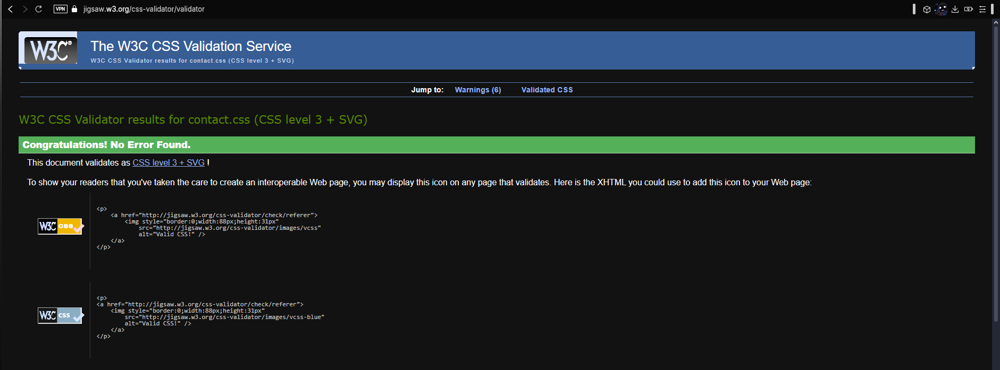

THE MODULE
Alright so let me first start with the module experience, simply put, I enjoyed it. This module was actually my first time understanding html, I have had many interaction with it by messing with inspect element every now and again to troll people but i never actually knew what it all meant. The way the module was taught was good and I especially like the way examples were shown to further explain how certain things work and what the limits actually are, it made doing the exercises easier than if you were to just read the powerpoint. We also learn a lot of useful tips and tricks that were not on the slides, tips that ive been using across development that just improve overall work flow.
DEVELOPMENT
A lot of my design choices were made spontaneously, for example the color scheme, i quite literally opened up coolors.co, hit generate and used the first palette it made. As for my fonts i new i wanted something game like or sci fi like, i wanted something cool and i found it. Initially I was gonna pick between 2 different ones i found on google fonts but then I realized i could just use both so I did. The LittleBigPlanet theme came up due to the game lingering in my mind recently because of a certain something a certain someone(Ye) tweeted. I found all the images i used in pngegg.com which is a really good site for transparent images. The idea of a banner was inspired by the loading screens of some games which have the same kind of moving text across the screen and this is what i used the aside tag for cuz I dont know what else i could have used it for.
VALIDATION
I know im just meant to put the fries in the bag and show the screenshots but first i have to say validation was on sum serious bs with my project and video demo files. Its all good now though.
HTML
   CSS
  I dont know why all the css files have 6 warnings i just noticed that now but it says warnings are allowed so im ignoring it